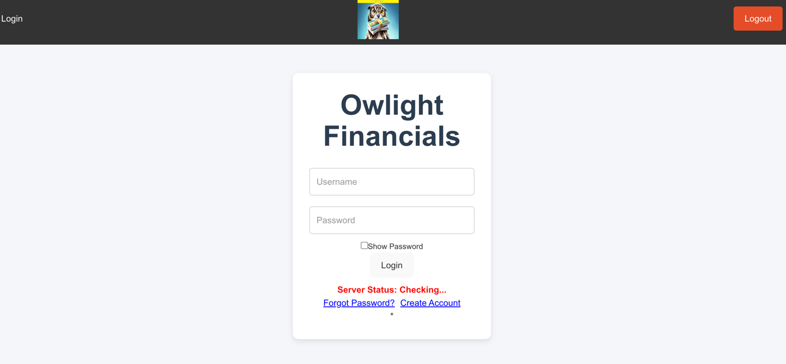

Developed by Donye Richardson, Zach Malta, and Eliana Feagins, is an accounting system designed to streamline financial operations through user-friendly tools for managing accounts, creating journal entries, generating reports, and monitoring financial activity. Built using TypeScript (TSX) and CSS, the project leverages modern web development practices with third-party systems such as Supabase for database management and GitHub for version control. Trello was employed to organize tasks and manage the Agile workflow across five sprints. The project’s core objective is to create an accessible, intuitive platform for users who may struggle with complex accounting software. By integrating features like role-based access (admin, user, manager), secure authentication, and approval workflows, Owlight Financials ensures accountability and transparency in financial management. Real-time financial dashboards and comprehensive reporting tools further enhance usability, making the system suitable for students, accountants, and small businesses. Key components of the system include a robust database schema designed to track user credentials, account activity, and journal entries. Advanced functionality, such as attaching files to journal entries and maintaining account change logs, demonstrates a focus on detail and precision. With a clear project roadmap and a commitment to Agile methodologies, Owlight Financials showcases the team’s expertise in full-stack development while addressing real-world financial management challenges.
